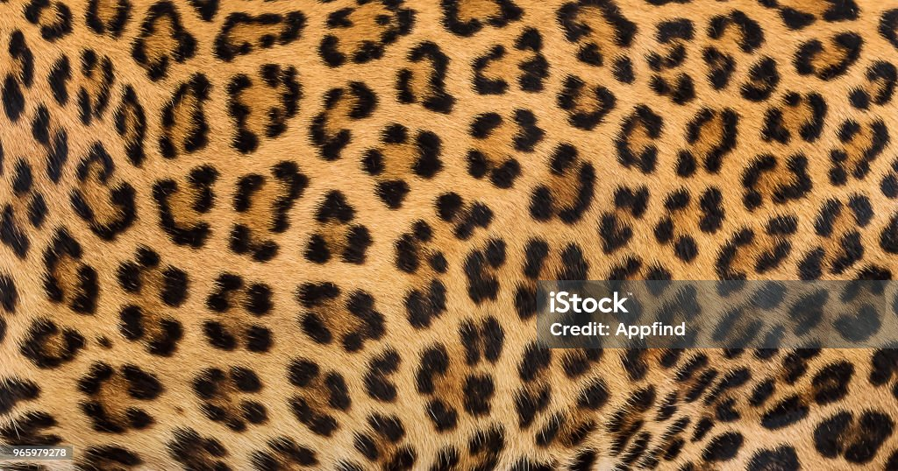
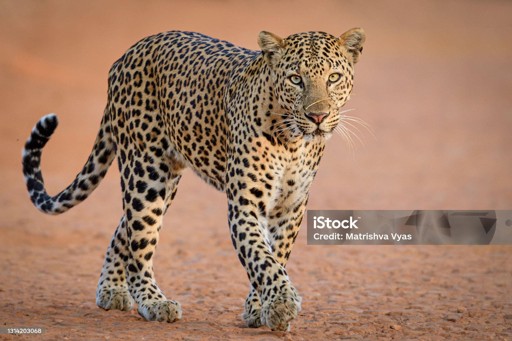
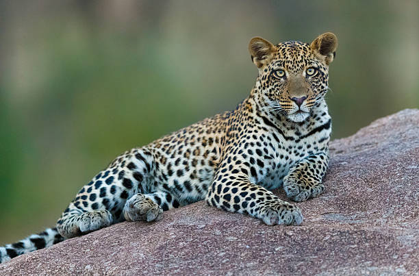
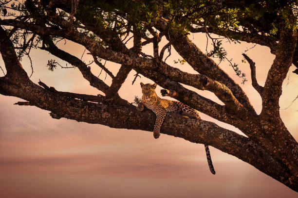
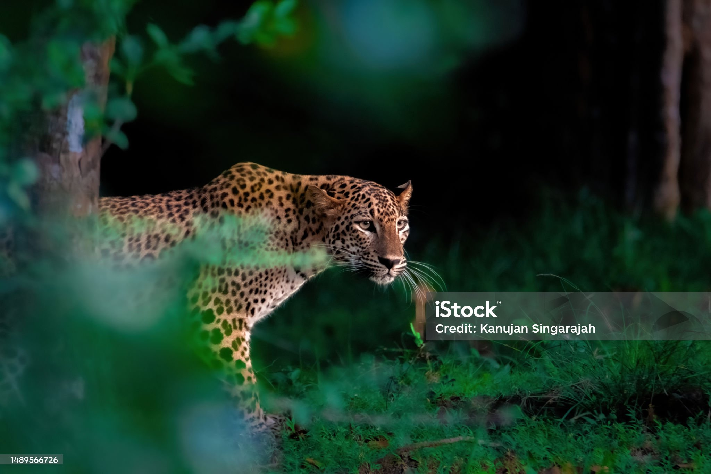

Гепард выглядит как поджарый выносливый легкоатлет. Кажется, что животное начисто лишено жировых отложений и состоит из легких прочных костей, сильных мускулов и эластичных сухожилий. Все предусмотрено для того, чтобы ставить рекорды скорости. Тело гепарда отличается великолепной аэродинамикой. Даже маленькая голова и крохотные ушки способствуют увеличению обтекаемости туловища. Грудная клетка невелика, однако легкие большие, что тоже важно для спринтера.

Описание внешности гепарда начинают с желтой шкуры, покрытой черными пятнышками. Боковые части морды украшают черные полоски. Они начинаются у глаз и похожи на ручейки слез, которые стекают вниз по морде. Их так и называют — «слезные полосы». Кажется, что животное всегда плачет.

Окраской шкуры гепард похож на ягуара и леопарда, но есть и отличия. Если тело гепарда покрывают сплошные черные пятнышки, то у леопарда — это небольшие розетки из пятнышек, расположенных близко друг к другу. У ягуара тоже розетки, но крупные и в центре каждой имеется пятно. Кроме того, гепард более поджарый, худощавый и стройный.

Длина взрослого гепарда без учета хвоста колеблется от 100 до 140 см. Еще 80 см добавляет длинный хвост. Высота не превышает 90 сантиметров. Вес может составлять от 40 до 65 кг. В отличие от большинства представителей кошачьих, гепард неполностью втягивает когти, что улучшает сцепление во время бега. Когти напоминают шипы на обуви спортсменов-спринтеров. Такое же устройство когтей имеется только у суматранской кошки и кота-рыболова. Интересная особенность гепарда состоит в том, что, когда он быстро бежит, температура тела повышается до 42 градусов!